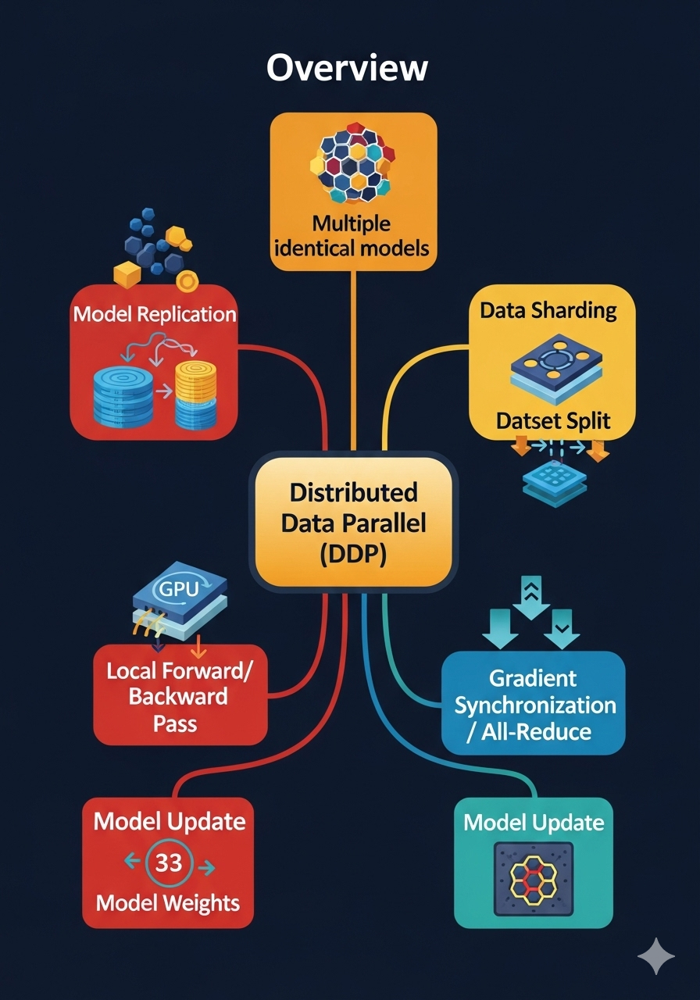

Distributed Data Parallel Training
Augmented Reading
Have you ever wondered,
- How do we fit large trillion-parameter models, such as ChatGPT 5.0, that require more than Terabytes of RAM on modern GPUs or APUs, whose RAM is limited to 100-250GB?
- How are we reducing training/inference time for models that used to take several months to train and are too slow at responding, like 4-5 years ago
To get answers to the above questions, let’s dive into the realm of DISTRIBUTED TRAINING.
Distributed training is a method used in machine learning to train large, complex models by splitting the computational workload across multiple processors or machines. This approach is necessary when a model or dataset is too large to be handled by a single computer, and it significantly speeds up the training process.
There are two primary strategies for distributed training:
- Data Parallelism: This is the most common approach. The training dataset is divided into smaller partitions, and a complete copy of the model is placed on each processor (worker node). Each worker trains the model on its unique subset of data. The results (gradients) from all workers are then combined and averaged to update the main model, and the updated model is sent back to all workers for the next iteration.
- Model Parallelism: This strategy is used when the model itself is too large to fit into the memory of a single machine. The model is split into different parts, and each part is placed on a separate machine. All machines work on the same batch of data, with each machine performing calculations for its specific part of the model before passing the results to the next machine in the sequence.
Let's dive deeper into the most common strategy, Distributed Data Parallelism, and unpack how it works step-by-step.
As we touched on, the core idea of data parallelism is to replicate the entire model on multiple machines (often called "workers" or "replicas") and feed each one a different slice of the data. This allows for massive parallel processing. Think of it like having a team of researchers; instead of one person reading a 1,000-page book, you give 10 researchers 100 pages each. They can all read their section simultaneously, drastically reducing the total time required.
Here’s a breakdown of a typical training loop using Distributed Data Parallelism:
- Initialization & Replication: The process begins with a complete copy of the neural network model being placed on each worker node (e.g., on each GPU). These models are identical, starting with the same initial weights
- Data Sharding: The entire training dataset is split into unique, smaller chunks or "shards." Each worker is assigned its own shard of the data for the upcoming training epoch.
- Parallel Forward & Backward Pass: All workers simultaneously begin the training process on their respective data shards. Each worker independently performs a forward pass (making predictions) and a backward pass (calculating the error and computing the gradients). At this point, each worker has calculated a set of gradients based only on the data it has seen.
- Gradient Synchronization (The Magic Step): This is the crucial communication phase. The gradients calculated by each individual worker must be combined to get a comprehensive update that represents the entire dataset. This is typically done using an efficient communication algorithm called All-Reduce. The All-Reduce operation gathers the gradients from all workers, averages them, and then distributes this single, averaged gradient back to all the workers.
- Synchronous Model Update: Now that every worker has the exact same averaged gradient, each one independently updates its local copy of the model's weights. Because they all started with the same model and all received the same averaged gradient, their models remain perfectly in sync after the update.
- Repeat: The entire process repeats for the next batch of data, continuing for many epochs until the model's performance converges.

The primary advantage of this method is its ability to dramatically shorten training times by processing huge datasets in parallel. However, its main challenge is the communication overhead. The All-Reduce step requires significant bandwidth as gradients are sent across the network, and this can sometimes become a bottleneck if not managed efficiently.